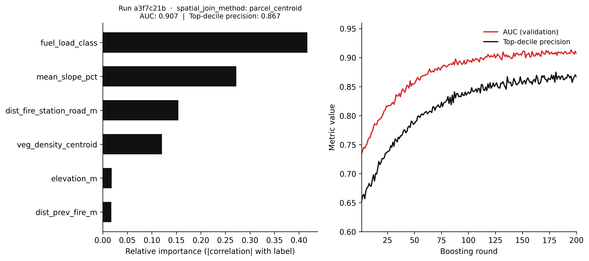
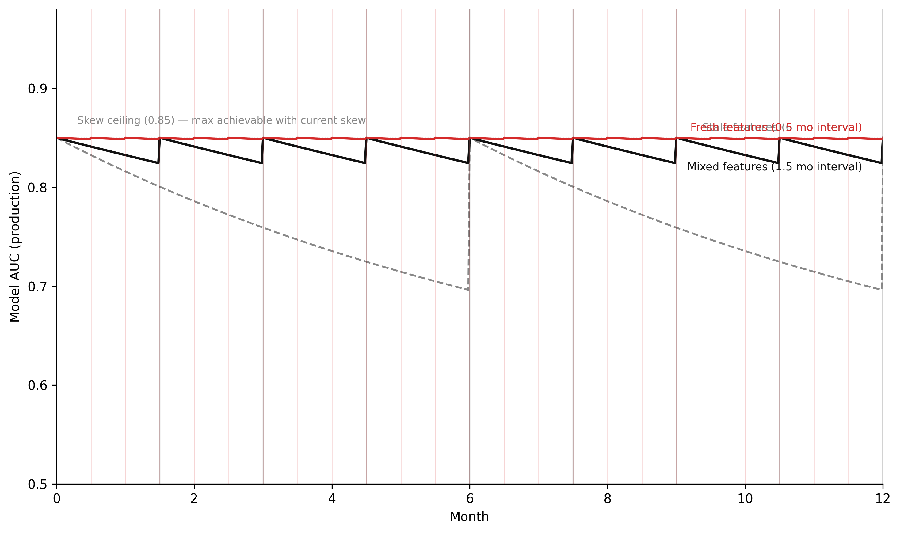

Feature stores, experiment tracking, and serving spatial models in production
9.1 The puzzle
A risk assessment team trained a parcel-level wildfire risk classifier for a regional fire authority. The model scored parcels on a 0–1 risk scale based on vegetation density, slope, proximity to previous fire perimeters, and distance to emergency access routes. In development, the model achieved a validation AUC of 0.91 against a held-out test set of historical fire events. This was good enough to proceed to production.
Six months into production, a retrospective analysis found that the model’s top-decile predictions had a precision of 0.64 against actual fire incidents — substantially below the 0.91 AUC implied. The model was not obviously broken. Its predictions were internally consistent. The probability scores looked reasonable. But the rank ordering that had worked in development was not working in production.
The investigation took three weeks. The eventual finding: the training pipeline computed vegetation density features using a spatial join to a 10-metre vegetation raster at the centroid of each parcel. The serving pipeline — the one that scored new parcels for the operational dashboard — computed the same feature using the centroid of the parcel’s bounding box, which is a different point for any non-rectangular parcel. For irregular parcels on steep terrain, the difference was 40–80 metres. Across a mountainous study area where vegetation density changes rapidly over short distances, those 80 metres were enough to produce systematically different feature values in training and serving.
The data looked identical. Both pipelines ingested from the same raster. Both computed vegetation density. The column names were the same. The value ranges were the same. But the computation was not the same, and the model had been trained on features it was not receiving in production.
This is training/serving skew. It is the most common failure mode in production ML systems, and it is particularly prevalent in spatial ML because spatial feature computation — spatial joins, raster extractions, network distance calculations — is both expensive and easy to implement inconsistently across two different codebases.
9.2 The four components of an ML platform
A production ML system is not a model. It is a system with at least four distinct components, each of which can fail independently and each of which has a different engineering responsibility.
The feature store is responsible for defining features, materialising them, and serving them to both the training pipeline and the serving pipeline. Its purpose is to ensure that a feature computed at training time and the same feature requested at serving time are produced by identical code. This is the structural solution to training/serving skew: eliminate the two codebases by having one.
In systems thinking terms, the feature store is the information structure intervention — Meadows’ LP 6. The skew problem was not caused by bad models or bad data; it was caused by two separate information pipelines that diverged. The feature store changes the structure: there is now one pipeline that produces features for all consumers.
The experiment tracking system is responsible for recording the inputs and outputs of every training run: the hyperparameters, the dataset version, the training metrics, and the model artefacts. Its purpose is reproducibility and comparison. Without experiment tracking, “the model we deployed six months ago” is a reference to a file somewhere with no guaranteed link to the configuration that produced it. With experiment tracking, it is a run ID with a complete record of everything that went into it.
In systems thinking terms, experiment tracking is the monitoring system that maintains the balancing loop of model improvement. The loop requires a signal (which configuration performs better?) and a record (what did we try before?). Without the record, the loop operates without memory — each experiment is disconnected from every other, and the organisation cannot learn systematically from its own trials.
The model registry is responsible for versioning trained models, tracking their promotion through a deployment lifecycle (staging, production, archived), and providing a single source of truth for which model is currently serving predictions. Its purpose is deployment hygiene: without a registry, “which model is in production?” is answered by looking at a server configuration file, if it can be answered at all.
The model registry is the stock maintenance component. The stock is “production model quality.” The flows are: training runs add new model versions to the registry, promotion decisions move models from staging to production, deprecation removes old versions. The registry makes the stock visible — it is the measurement system for a stock that would otherwise be unobservable.
The serving layer is responsible for taking a trained model from the registry and applying it to new inputs, either in real time (online inference) or in batch (offline inference). It is the place where training/serving skew is most likely to manifest: the serving layer must produce the same features the model was trained on, using the same code.
The serving layer is also where the feedback loop from production back to training begins. User interactions, system outcomes, and ground truth labels that accumulate in production are the inputs to the next training run. If the serving layer does not capture this feedback, the retraining loop is severed — the same feedback starvation described in Chapter 6. The serving layer is not just an inference endpoint; it is a data collection system.
9.3 Feature stores for spatial ML
Spatial features are different from tabular features in one important way: computing them requires a spatial operation at feature computation time. Tabular features — age, income band, transaction count — can be extracted from a row of a table with simple column references. Spatial features — distance to nearest fire station, percentage of land within 1 km classified as high fuel load, mean slope within a parcel — require a spatial join, a raster extraction, or a network analysis. These operations are expensive, and they are easy to implement differently in two codebases that both purport to compute “the same” feature.
Feast is the standard open-source feature store. Its data model has three components. A FeatureView defines a set of features, the data source they come from, and the entity they are keyed on (in spatial ML, the entity is typically a spatial unit identifier — a parcel ID, a cell ID, a property UPRN). An Entity defines the primary key type. A DataSource defines where the feature data lives (an offline store for training, an online store for serving). Feast materialises features from the offline store to the online store on a schedule, so that the serving layer can retrieve pre-computed feature values with low latency.
The critical property: the feature computation logic is defined once in the FeatureView. The training pipeline calls get_historical_features(). The serving pipeline calls get_online_features(). Both use the same feature definition. Training/serving skew requires violating this architecture — computing the feature differently outside the feature store.
Code
"""Feast feature store definition for spatial wildfire risk features.Illustrates FeatureView definitions for spatial ML.Run in a Feast project directory: feast apply, feast materialize."""from datetime import timedeltafrom feast import ( Entity, FeatureView, Field, FileSource, ValueType,)from feast.types import Float32, Int64, String# -- Entity: the spatial unit the features are keyed on -----------------------parcel = Entity( name="parcel_id", value_type=ValueType.STRING, description="Land parcel identifier (VLSID from state land registry)",)# -- Offline data source: GeoParquet on local filesystem (or S3 in production) -parcel_features_source = FileSource( path="data/features/parcel_spatial_features.parquet", timestamp_field="feature_timestamp",# timestamp_field is required for point-in-time correct training data retrieval)# -- FeatureView: vegetation and terrain features -----------------------------# These features are computed by the spatial preprocessing pipeline (Python + GDAL)# and written to the parquet file. The feature computation code lives in# feature_pipelines/compute_parcel_features.py — one place, used by both# offline training data retrieval and online serving materialisation.vegetation_terrain_features = FeatureView( name="parcel_vegetation_terrain", entities=[parcel], ttl=timedelta(days=180), # features older than 180 days trigger a freshness alert schema=[ Field(name="veg_density_centroid", dtype=Float32, description="Vegetation density (NDVI) at parcel centroid from 10m raster"), Field(name="mean_slope_pct", dtype=Float32, description="Mean slope in percent across parcel area"), Field(name="fuel_load_class", dtype=Int64, description="Dominant fuel load classification (1=low, 2=med, 3=high, 4=extreme)"), Field(name="dist_prev_fire_m", dtype=Float32, description="Distance in metres to nearest historical fire perimeter"), Field(name="aspect_degrees", dtype=Float32, description="Mean aspect in degrees (0=N, 90=E, 180=S, 270=W)"), ], source=parcel_features_source, tags={"domain": "wildfire", "crs": "GDA2020_MGA55", "resolution": "10m"},)# -- FeatureView: access and infrastructure features --------------------------access_features_source = FileSource( path="data/features/parcel_access_features.parquet", timestamp_field="feature_timestamp",)access_infrastructure_features = FeatureView( name="parcel_access_infrastructure", entities=[parcel], ttl=timedelta(days=365), # access routes change less frequently than vegetation schema=[ Field(name="dist_fire_station_road_m", dtype=Float32, description="Road network distance in metres to nearest fire station"), Field(name="dist_fire_access_track_m", dtype=Float32, description="Distance in metres to nearest fire authority access track"), Field(name="parcel_area_ha", dtype=Float32, description="Parcel area in hectares (computed from registered geometry)"), Field(name="perimeter_m", dtype=Float32, description="Parcel perimeter in metres"), Field(name="elevation_m", dtype=Float32, description="Mean elevation in metres above sea level (AHD71)"), ], source=access_features_source, tags={"domain": "wildfire", "crs": "GDA2020_MGA55"},)
Figure 9.1
Retrieving features for training — with point-in-time correctness so that the training data reflects the feature values at the time each label was generated, not the current values:
Code
"""Point-in-time correct feature retrieval for training.Each parcel gets the feature values that were current at event_timestamp —not the current values, which may have changed since the fire occurred."""import pandas as pdfrom feast import FeatureStorestore = FeatureStore(repo_path="feature_repo/")# Training entity DataFrame: one row per training example# event_timestamp is the date of the fire incident (or non-fire observation)entity_df = pd.DataFrame({"parcel_id": ["P001", "P002", "P003", "P004"],"event_timestamp": pd.to_datetime(["2022-01-15", "2022-03-08", "2022-07-22", "2023-02-11" ]),})# Retrieve historical features aligned to each event_timestamp# Feast joins features to each row using the timestamp that was current# at event_timestamp — not the latest available valuestraining_df = store.get_historical_features( entity_df=entity_df, features=["parcel_vegetation_terrain:veg_density_centroid","parcel_vegetation_terrain:mean_slope_pct","parcel_vegetation_terrain:fuel_load_class","parcel_vegetation_terrain:dist_prev_fire_m","parcel_access_infrastructure:dist_fire_station_road_m","parcel_access_infrastructure:elevation_m", ],).to_df()
Retrieving features for serving — using the same feature definitions, but from the online store:
Code
"""Online feature retrieval for real-time serving.Uses the same FeatureView definitions as training — no separate computation."""from feast import FeatureStorestore = FeatureStore(repo_path="feature_repo/")# New parcels to scoreparcel_ids = ["P7823", "P7824", "P7825"]online_features = store.get_online_features( features=["parcel_vegetation_terrain:veg_density_centroid","parcel_vegetation_terrain:mean_slope_pct","parcel_vegetation_terrain:fuel_load_class","parcel_vegetation_terrain:dist_prev_fire_m","parcel_access_infrastructure:dist_fire_station_road_m","parcel_access_infrastructure:elevation_m", ], entity_rows=[{"parcel_id": pid} for pid in parcel_ids],).to_dict()# online_features now contains the same column names as training_df# The model receives features computed by the same code that produced training data
The point-in-time correctness property of get_historical_features() deserves emphasis. Spatial features are not static. Vegetation changes seasonally and after disturbance. Road networks change as tracks are added or closed. If the training data is assembled using current feature values rather than values at the time of each training example, the model learns a feature-label relationship that is distorted by temporal misalignment. A parcel where a fire occurred in January 2022 should have its features retrieved as of January 2022 — not as of the date the training run was executed, which may be 18 months later. This is a second category of training/serving skew: temporal skew, where features are computed at the wrong point in time.
9.4 MLflow experiment tracking
MLflow records everything about a training run: the parameters, the metrics, the model artefacts, and the environment. A training run that is not tracked in MLflow is a run whose results cannot be reproduced, whose performance cannot be compared to other runs, and whose model cannot be reliably deployed by someone other than the engineer who ran it.
The model registry component of MLflow adds a deployment lifecycle on top of the experiment tracking. A trained model is logged to the tracking server as an artefact. It can then be registered in the model registry with a version number. The registry tracks which version is in Staging (being evaluated), which is in Production (serving live predictions), and which is Archived (superseded). Promotion between stages requires an explicit action — a manual approval or an automated test gate — which is the governance checkpoint that separates “a model someone trained” from “the model the system is using.”
Code
"""Feature importance simulation for a spatial wildfire risk classifier — Chapter 8.Uses numpy only (no sklearn, no mlflow) to illustrate the same conceptual output:feature importances, training metric progression, and the run parameter record.The logged spatial_join_method parameter is the key audit trail for skew diagnosis."""import numpy as npimport matplotlib.pyplot as pltrng = np.random.default_rng(42)n_samples =2000FEATURE_NAMES = ["veg_density_centroid","mean_slope_pct","fuel_load_class","dist_prev_fire_m","dist_fire_station_road_m","elevation_m",]# Simulate feature matrix with known signal strengths# fuel_load_class (idx 2) and mean_slope_pct (idx 1) are the dominant predictorsX = rng.standard_normal((n_samples, len(FEATURE_NAMES)))true_log_odds =0.80* X[:, 2] +0.50* X[:, 1] -0.30* X[:, 4] +0.15* X[:, 0]y = (rng.random(n_samples) <1.0/ (1.0+ np.exp(-true_log_odds))).astype(int)# Point-biserial correlation magnitude as a proxy for feature importanceimportances = np.array([abs(np.corrcoef(X[:, j], y)[0, 1]) for j inrange(len(FEATURE_NAMES))])importances /= importances.sum() # normalise to sum to 1sorted_idx = np.argsort(importances)# Simulate training metric curve (AUC increases, then plateaus)n_rounds =200rounds = np.arange(1, n_rounds +1)auc_curve =0.91-0.18* np.exp(-rounds /40.0) + rng.normal(0, 0.003, n_rounds)prec_curve =0.87-0.22* np.exp(-rounds /50.0) + rng.normal(0, 0.004, n_rounds)auc_curve = np.clip(auc_curve, 0.70, 0.93)prec_curve = np.clip(prec_curve, 0.60, 0.89)# MLflow run metadata (displayed in title — simulated run_id)run_id ="a3f7c21b"auc_final =float(auc_curve[-1])prec_final =float(prec_curve[-1])fig, (ax_imp, ax_met) = plt.subplots(1, 2, figsize=(11, 5), dpi=150)# Left: feature importancesax_imp.barh( [FEATURE_NAMES[i] for i in sorted_idx], importances[sorted_idx], color="#111111", height=0.6,)ax_imp.set_xlabel("Relative importance (|correlation| with label)")ax_imp.set_title(f"Run {run_id} · spatial_join_method: parcel_centroid\n"f"AUC: {auc_final:.3f} | Top-decile precision: {prec_final:.3f}", fontsize=9,)ax_imp.spines["top"].set_visible(False)ax_imp.spines["right"].set_visible(False)ax_imp.grid(False)# Right: training metric curvesax_met.plot(rounds, auc_curve, color="#d52a2a", linewidth=1.6, label="AUC (validation)")ax_met.plot(rounds, prec_curve, color="#111111", linewidth=1.6, label="Top-decile precision")ax_met.set_xlabel("Boosting round")ax_met.set_ylabel("Metric value")ax_met.set_xlim(1, n_rounds)ax_met.set_ylim(0.60, 0.96)ax_met.legend(frameon=False, fontsize=9)ax_met.spines["top"].set_visible(False)ax_met.spines["right"].set_visible(False)ax_met.grid(False)plt.tight_layout(pad=1.5)plt.savefig("_assets/ch08-feature-importances.png", dpi=150, bbox_inches="tight")plt.show()

Figure 9.2: Figure 8.1. Simulated MLflow run summary for a wildfire risk classifier. Left: feature importances derived from the absolute point-biserial correlation between each feature and the fire label (a proxy for the impurity-based importances a gradient boosted model would learn from the same data). Right: training metric history showing AUC and top-decile precision across 200 boosting rounds. The spatial_join_method parameter is logged explicitly because it is the audit trail for training/serving skew investigations — if the serving pipeline uses a different join method, this record makes the discrepancy visible.
Logging spatial_join_method as a parameter is deliberate. The original production failure was caused by a difference in spatial join method between training and serving that was invisible in the model artefacts and metrics. Making the spatial computation method a logged parameter means that when a production performance investigation begins, the audit trail includes the exact computation that produced the training features. If the serving pipeline uses a different method, the discrepancy is visible immediately.
9.5 Training/serving skew
Training/serving skew deserves its own section because it is not a bug — it is an architecture failure. A bug can be fixed by correcting the offending line of code. Training/serving skew cannot be fixed by correcting a line of code; it requires changing the architecture so that training and serving use the same code.
The failure pattern is consistent across many production ML systems. A team builds a training pipeline in a notebook or a batch job. The team builds a serving pipeline in a separate codebase — a Flask app, a Lambda function, a Spark streaming job. Both pipelines implement the same feature logic, but in different code. They look identical at the column name level. They are not identical at the computation level. The model is trained on features from one implementation and served with features from the other. The accuracy gap between development and production is a function of the magnitude of the difference in feature computation.
The spatial case is particularly severe because spatial computations involve so many opportunities for inconsistency:
The training pipeline uses the parcel centroid; the serving pipeline uses the bounding box centre.
The training pipeline uses a 30-metre raster; the serving pipeline uses a 10-metre raster of the same dataset.
The training pipeline reprojects from GDA94 to GDA2020 before extraction; the serving pipeline does not.
The training pipeline computes road network distance using a road network current as of 2021; the serving pipeline uses a road network updated in 2023 that includes new fire access tracks.
Any one of these differences produces a feature distribution shift between training and serving. The model was not trained on the data it receives in production. Its decision boundaries are calibrated to a feature distribution that does not exist in the serving environment. The accuracy gap is not model failure; it is data failure at the feature layer.
The architectural fix is the feature store: define feature computation logic once, materialise it for both training and serving. The training pipeline calls get_historical_features(). The serving pipeline calls get_online_features(). The computation is the same because it is executed by the same code. Training/serving skew is eliminated structurally, not by auditing two codebases for consistency.
The secondary fix is test coverage at the feature layer. Before deploying a model, run a feature distribution comparison between the training set features and a sample of features from the serving pipeline. If the distributions are meaningfully different, there is skew and it must be investigated before deployment. This is the operational equivalent of the within_national_grid test from Chapter 7: a test that makes the invisible failure mode visible before it reaches production.
9.6 Online vs batch inference
Spatial models are used in two fundamentally different serving contexts, and the platform architecture for each is different.
Batch inference is appropriate when the model scores a fixed population of spatial units on a schedule. A parcel-level wildfire risk map updated weekly is batch inference: at the end of each week, the serving pipeline scores all 200,000 parcels in the study area using features materialised from the feature store, writes the scores to a database table, and the risk map reads from that table. The latency between a feature value changing and the risk score reflecting that change is up to one week — acceptable for a weekly planning tool.
Batch inference pipelines are straightforward to build with dbt and a feature store. The feature materialisation step runs on a schedule. The inference step reads from the online store, applies the model, and writes scores to the output table. The monitoring step compares the current score distribution to the previous week’s and raises an alert if the shift exceeds a threshold. The entire pipeline runs without a server that must be kept alive between scoring runs.
Online inference is appropriate when the model must score an input in real time, with sub-second latency. A routing system that assesses wildfire risk on proposed evacuation routes needs online inference: when an incident commander requests a route, the risk model scores candidate routes in real time. The latency requirement (under 500 milliseconds) rules out the batch approach — there is no time to wait for a scheduled materialisation.
Online inference requires a different architecture: a served model endpoint (a FastAPI service, a cloud ML endpoint, or a model deployed to an edge device), an online feature store with low-latency reads (Redis, DynamoDB, or Feast’s online store), and a serving API that assembles features, calls the model, and returns a prediction in real time.
The trade-off between online and batch is a trade-off between freshness and infrastructure complexity. Batch inference is cheaper, easier to test, and easier to monitor. Online inference is fresher but requires keeping a server running, managing endpoint scaling, and handling the failure modes of a live service. For most spatial analytics tasks — risk maps, habitat assessments, land use classification — batch inference at daily or weekly frequency is sufficient. The additional complexity of online inference is only justified when the latency requirement is strict.
9.7 Simulating accuracy degradation under feature staleness
The simulation below models model accuracy as a stock that degrades under three feature freshness scenarios: fresh features (materialised on a short cycle), stale features (materialised infrequently), and mixed features (some feature groups fresh, others stale). The dynamics are the same as the concept drift simulation in Chapter 6 — accuracy decays when the feature distribution diverges from the training distribution, and recovers when features are re-materialised. The additional element is training/serving skew: even with fresh features, a residual accuracy gap is present if the feature computation is inconsistent between training and serving.
Code
"""Model accuracy degradation under feature staleness — Chapter 8.Stock-flow simulation analogous to concept drift model in Ch 6.Three scenarios: fresh features, stale features, mixed (some fresh, some stale).Additional parameter: training/serving skew magnitude (residual accuracy gap)."""import numpy as npimport matplotlib.pyplot as plt# -- Named constants -----------------------------------------------------------ACCURACY_TRAIN =0.91# AUC at training timeSKEW_MAGNITUDE =0.06# accuracy penalty from training/serving skew# even with perfectly fresh features, serving accuracy# is at most ACCURACY_TRAIN - SKEW_MAGNITUDEACCURACY_CEILING = ACCURACY_TRAIN - SKEW_MAGNITUDE # = 0.85ACCURACY_FLOOR =0.55# random chance baseline for this taskDRIFT_RATE_STALE =0.12# accuracy decay per month when features are staleDRIFT_RATE_FRESH =0.01# residual decay when features are freshDRIFT_RATE_MIXED =0.06# intermediate decay for mixed scenarioFRESH_INTERVAL =0.5# feature materialisation interval in months (fresh scenario)STALE_INTERVAL =6.0# feature materialisation interval in months (stale scenario)MIXED_INTERVAL =1.5# feature materialisation interval in months (mixed scenario)DT =0.02# Euler time step (months)T_START =0.0T_END =12.0# 12-month simulationCOL_FRESH ="#d52a2a"# fresh: redCOL_STALE ="#888888"# stale: greyCOL_MIXED ="#111111"# mixed: blackSTEPS =int((T_END - T_START) / DT) +1t = np.linspace(T_START, T_END, STEPS)def run_accuracy_simulation(drift_rate, materialisation_interval):""" Simulate model accuracy under one feature freshness scenario. accuracy decays toward ACCURACY_FLOOR at drift_rate per month. Every materialisation_interval months, features are refreshed: accuracy recovers toward ACCURACY_CEILING. """ accuracy = np.empty(STEPS) accuracy[0] = ACCURACY_CEILING retrain_times = [] last_materialise =0.0for i inrange(1, STEPS): t_now = t[i] a_prev = accuracy[i -1]# Accuracy decays toward floor d_acc =-drift_rate * (a_prev - ACCURACY_FLOOR) a_new = a_prev + d_acc * DT# Check for feature materialisationif (t_now - last_materialise) >= materialisation_interval:# Features refreshed: accuracy jumps back toward ceiling a_new = ACCURACY_CEILING last_materialise = t_now retrain_times.append(t_now) accuracy[i] = a_newreturn accuracy, retrain_times# -- Run all three scenarios ---------------------------------------------------acc_fresh, rt_fresh = run_accuracy_simulation(DRIFT_RATE_FRESH, FRESH_INTERVAL)acc_stale, rt_stale = run_accuracy_simulation(DRIFT_RATE_STALE, STALE_INTERVAL)acc_mixed, rt_mixed = run_accuracy_simulation(DRIFT_RATE_MIXED, MIXED_INTERVAL)# -- Figure -------------------------------------------------------------------fig, ax = plt.subplots(figsize=(10, 6), dpi=150)ax.plot(t, acc_stale, color=COL_STALE, linestyle="--", linewidth=1.4)ax.plot(t, acc_mixed, color=COL_MIXED, linestyle="-", linewidth=1.8)ax.plot(t, acc_fresh, color=COL_FRESH, linestyle="-", linewidth=1.8)# Mark feature materialisation eventsfor rt in rt_stale: ax.axvline(rt, color=COL_STALE, alpha=0.3, linewidth=1.0)for rt in rt_mixed: ax.axvline(rt, color=COL_MIXED, alpha=0.25, linewidth=0.8)for rt in rt_fresh: ax.axvline(rt, color=COL_FRESH, alpha=0.2, linewidth=0.6)# Training/serving skew floorax.axhline(ACCURACY_CEILING, color="#888888", linestyle=":", linewidth=0.8, zorder=0)ax.annotate(f"Skew ceiling ({ACCURACY_CEILING:.2f}) — max achievable with current skew", xy=(0.3, ACCURACY_CEILING), xytext=(0.3, ACCURACY_CEILING +0.012), fontsize=8, color="#888888", va="bottom")# Scenario labelsfor label, t_, acc_, col, offset in [ ("Stale features (6 mo interval)", t, acc_stale, COL_STALE, 0.01), ("Mixed features (1.5 mo interval)", t, acc_mixed, COL_MIXED, -0.03), ("Fresh features (0.5 mo interval)", t, acc_fresh, COL_FRESH, 0.01),]: ax.annotate(label, xy=(t_[-1], acc_[-1]), xytext=(t_[-1] -0.3, acc_[-1] + offset), fontsize=8.5, color=col, ha="right", va="center")ax.set_xlim(T_START, T_END)ax.set_ylim(0.50, 0.98)ax.set_xlabel("Month")ax.set_ylabel("Model AUC (production)")ax.spines["top"].set_visible(False)ax.spines["right"].set_visible(False)ax.grid(False)plt.tight_layout(pad=1.5)plt.savefig("_assets/ch08-accuracy-degradation.png", dpi=150, bbox_inches="tight")plt.show()

Figure 9.3: Figure 8.2. Model accuracy under three feature freshness scenarios over 12 months. Fresh features (red) maintain accuracy near the training benchmark because the serving feature distribution matches the training distribution. Stale features (grey dashed) show continuous decay as the feature distribution diverges. Mixed features (black) show intermediate behaviour: accuracy is maintained for the features that are fresh but decays along the dimensions corresponding to the stale features. The training/serving skew floor (horizontal dotted line) represents the accuracy level achievable with perfectly fresh features when a residual computation mismatch exists — the model can never exceed this ceiling in production without fixing the skew.
The ceiling created by SKEW_MAGNITUDE is the simulation’s structural argument: training/serving skew sets a ceiling on production accuracy that feature freshness cannot exceed. Perfectly fresh features with residual skew produce accuracy at ACCURACY_TRAIN - SKEW_MAGNITUDE. Eliminating the skew — by fixing the feature store architecture — shifts the ceiling to ACCURACY_TRAIN. Increasing the feature materialisation frequency — without fixing the skew — does not move the ceiling. This is the hierarchy of interventions: architectural fixes (LP 6) before operational tuning (LP 12).
TipWhat to try
Increase SKEW_MAGNITUDE to 0.15. This represents a large training/serving skew — for example, a major difference in raster resolution between training and serving. How does this change the gap between the fresh and stale scenarios? At what skew magnitude does feature freshness no longer meaningfully differentiate performance, and what does that imply about where the engineering effort should go?
Set FRESH_INTERVAL = 3.0 and STALE_INTERVAL = 3.0. With both scenarios materialising at the same frequency, the only difference is their drift rate. What is the minimum ratio of DRIFT_RATE_FRESH to DRIFT_RATE_STALE that produces a visible performance gap at month 12? What real-world factors determine the drift rate for a spatial feature — what makes vegetation density features drift faster than road network distance features?
Add a retraining event at month 6. At month 6, the team retrains the model using current feature values and deploys the new version. Implement this as: at t = 6, set ACCURACY_CEILING to the current accuracy value for each scenario (the features are now the training distribution) and continue the simulation. How much does retraining recover the stale scenario? Does retraining with stale features produce a higher or lower ceiling than retraining with fresh features, and why?
import numpy as npimport matplotlib.pyplot as plt# --- Try changing these parameters ---ACCURACY_TRAIN =0.91# baseline model AUC from developmentSKEW_MAGNITUDE =0.06# accuracy penalty from training/serving skew (try 0.15)DRIFT_RATE_STALE =0.12# decay rate when features are stale (try 0.05)DRIFT_RATE_FRESH =0.01# decay rate when features are freshFRESH_INTERVAL =0.5# months between feature materialisation (fresh)STALE_INTERVAL =6.0# months between feature materialisation (stale)T_END =12.0# simulation length in monthsACCURACY_CEILING = ACCURACY_TRAIN - SKEW_MAGNITUDEACCURACY_FLOOR =0.55DT =0.02STEPS =int(T_END / DT) +1t = np.linspace(0.0, T_END, STEPS)def run_sim(drift_rate, mat_interval): acc = np.empty(STEPS) acc[0] = ACCURACY_CEILING last_mat =0.0for i inrange(1, STEPS): t_now = t[i] dq =-drift_rate * (acc[i-1] - ACCURACY_FLOOR) acc[i] = acc[i-1] + dq * DTif (t_now - last_mat) >= mat_interval: acc[i] = ACCURACY_CEILING last_mat = t_nowreturn accacc_fresh = run_sim(DRIFT_RATE_FRESH, FRESH_INTERVAL)acc_stale = run_sim(DRIFT_RATE_STALE, STALE_INTERVAL)fig, ax = plt.subplots(figsize=(9, 5))ax.plot(t, acc_stale, color="#888", linestyle="--", linewidth=1.4, label=f"Stale ({STALE_INTERVAL} mo interval)")ax.plot(t, acc_fresh, color="#d52a2a", linewidth=1.8, label=f"Fresh ({FRESH_INTERVAL} mo interval)")ax.axhline(ACCURACY_CEILING, color="#aaa", linestyle=":", linewidth=0.8)ax.annotate(f"Skew ceiling ({ACCURACY_CEILING:.2f})", xy=(0.3, ACCURACY_CEILING +0.008), fontsize=8, color="#888")ax.axhline(ACCURACY_TRAIN, color="#aaa", linestyle="--", linewidth=0.6)ax.annotate(f"Training AUC ({ACCURACY_TRAIN:.2f})", xy=(0.3, ACCURACY_TRAIN +0.008), fontsize=8, color="#888")ax.set_xlabel("Month")ax.set_ylabel("Model AUC (production)")ax.set_xlim(0, T_END)ax.set_ylim(0.50, 0.98)ax.legend(frameon=False, fontsize=9)ax.spines["top"].set_visible(False)ax.spines["right"].set_visible(False)plt.tight_layout()plt.show()
9.8 Exercises
8.1 — Training/serving skew diagnosis
A species distribution model is trained to predict bird habitat suitability from elevation, canopy cover, and distance to water features. The training pipeline extracts features from rasters at the centroid of each 1 km² grid cell. The serving pipeline extracts features using the mean value across the entire grid cell (a zonal statistics operation). Validation AUC is 0.87. Production AUC (measured three months after deployment against survey data) is 0.71.
Explain the mechanism by which the difference in spatial extraction method (centroid vs. zonal mean) produces a feature distribution shift. Under what terrain and vegetation conditions would the shift be largest? Under what conditions would it be negligible?
Propose a test that could have detected this skew before deployment. Describe the test inputs, the comparison metric, and the threshold above which the test should fail.
The team considers two fixes: (i) update the serving pipeline to use centroid extraction, matching the training pipeline; (ii) update both pipelines to use zonal mean, retrain the model, and redeploy. Evaluate the engineering cost and data quality trade-offs of each approach. Which is preferable and why?
8.2 — Feature store design
You are building a Feast feature store for a pipeline that scores census output areas (COAs) for air quality risk based on: mean annual NO₂ concentration from DEFRA monitoring stations, proximity to industrial sites, residential density, and percentage of elderly residents (who face higher health risk from air quality).
Define the entity, data sources, and FeatureView(s) for this pipeline. For each feature, specify: the source dataset, the spatial operation required to compute it at the COA level, and a reasonable TTL (time-to-live).
The NO₂ concentration data is updated annually. The industrial site locations are updated quarterly. The residential density and elderly resident percentage come from the census, which is updated every 10 years. How do these different update frequencies affect the TTL you assign to each FeatureView? What happens to the risk score when a COA’s features are older than their TTL?
A researcher wants to study the historical relationship between air quality features and respiratory hospital admissions from 2015 to 2023. Explain why point-in-time correct feature retrieval is necessary for this analysis, and describe what incorrect result would be produced if historical features were retrieved using current feature values instead.
8.3 — MLflow model registry
A team maintains a wildfire risk model in production. The model is retrained quarterly. The MLflow model registry has three registered model versions: version 3 (currently Production), version 4 (currently Staging), and version 5 (just trained, currently None/candidate).
Describe the promotion workflow for version 5: what tests or evaluations should it pass before being promoted to Staging? What additional checks are appropriate before it is promoted from Staging to Production? Specify at least one spatial-specific metric that should be included in the evaluation.
Version 4 has been in Staging for two weeks and its evaluation results are borderline: AUC of 0.88 (up from version 3’s 0.86), but top-decile precision has declined from 0.79 to 0.74. The precision metric matters more for operational use (fire crews respond to top-decile alerts). What decision do you make, and how should the registry record it?
The team discovers that version 3 — currently Production — was trained with a spatial join method that differs from version 4 and version 5. How does MLflow’s parameter logging help or hinder this investigation? What parameter should have been logged in every training run to make this discoverable immediately?
8.4 — Batch vs online inference
A water utility uses a spatial model to predict pipe burst probability across its distribution network of 45,000 pipe segments. The model uses features including pipe age, material, soil type, proximity to road works, and historical burst records.
The utility currently runs batch inference weekly and publishes a risk map for maintenance scheduling. Identify two limitations of weekly batch inference for this application, and describe a scenario where those limitations would cause real operational harm.
The utility considers moving to daily batch inference. Describe the changes required to the feature store (materialisation schedule), the inference pipeline (scheduling), and the monitoring system (alert thresholds). What is the primary engineering cost of this change?
A separate use case emerges: when road works are planned near a pipe segment, the system should generate an updated burst probability for that segment in real time, to inform whether enhanced monitoring is required. Evaluate whether this use case requires online inference or whether it can be served with more frequent batch inference. Specify the latency requirement, the feature freshness requirement, and the infrastructure implication of each approach.
9.9 Build this
A minimal end-to-end ML platform for a spatial classifier: Feast feature store, MLflow training loop, and FastAPI serving endpoint.
training/train.py — complete training loop with MLflow:
"""train.py — Wildfire risk classifier training with MLflow tracking.Usage: python training/train.pyRequires: - Feast feature store materialised (feast materialize-incremental <end_date>) - MLflow tracking server running (mlflow server --host 0.0.0.0 --port 5000) or MLFLOW_TRACKING_URI set to a remote URI"""import pandas as pdimport mlflowimport mlflow.sklearnfrom feast import FeatureStorefrom sklearn.ensemble import GradientBoostingClassifierfrom sklearn.model_selection import train_test_splitfrom sklearn.metrics import roc_auc_scoreFEATURE_COLS = ["veg_density", "mean_slope_pct", "fuel_load_class","dist_prev_fire_m", "dist_fire_station_m", "elevation_m",]PARAMS = {"n_estimators": 200,"max_depth": 4,"learning_rate": 0.05,"spatial_join_method": "parcel_centroid", # log this for skew audit"feature_store_version": "feast_repo@main",}def main(): store = FeatureStore(repo_path="feature_repo/")# Load labelled training events (parcel_id + event_timestamp + fire_occurred) entity_df = pd.read_parquet("data/training_events.parquet") training_df = store.get_historical_features( entity_df=entity_df, features=[f"parcel_risk_features:{col}"for col in FEATURE_COLS], ).to_df() X = training_df[FEATURE_COLS].values y = training_df["fire_occurred"].values X_train, X_test, y_train, y_test = train_test_split( X, y, test_size=0.2, random_state=42, stratify=y ) mlflow.set_experiment("wildfire_risk_production")with mlflow.start_run(): mlflow.log_params(PARAMS) model = GradientBoostingClassifier( n_estimators=PARAMS["n_estimators"], max_depth=PARAMS["max_depth"], learning_rate=PARAMS["learning_rate"], random_state=42, ) model.fit(X_train, y_train) auc = roc_auc_score(y_test, model.predict_proba(X_test)[:, 1]) mlflow.log_metric("auc", auc) mlflow.log_metric("n_train", len(X_train)) mlflow.sklearn.log_model( sk_model=model, artifact_path="model", registered_model_name="wildfire_risk_classifier", )print(f"Run complete — AUC: {auc:.4f}")if__name__=="__main__": main()
serving/app.py — FastAPI inference endpoint:
"""app.py — FastAPI serving endpoint for wildfire risk classifier.Retrieves features from the Feast online store (pre-materialised),loads the Production model from the MLflow registry,and returns a risk score for a given parcel ID.Usage: uvicorn serving.app:app --host 0.0.0.0 --port 8000Endpoint: GET /predict/{parcel_id} → {"parcel_id": ..., "risk_score": ..., "risk_band": ...}"""import osfrom fastapi import FastAPI, HTTPExceptionfrom pydantic import BaseModelimport mlflow.sklearnfrom feast import FeatureStoreapp = FastAPI(title="Wildfire Risk Classifier", version="1.0")FEATURE_COLS = ["veg_density", "mean_slope_pct", "fuel_load_class","dist_prev_fire_m", "dist_fire_station_m", "elevation_m",]# Load model and feature store at startup — not on every requeststore = FeatureStore(repo_path="feature_repo/")model = mlflow.sklearn.load_model("models:/wildfire_risk_classifier/Production")class PredictionResponse(BaseModel): parcel_id: str risk_score: float risk_band: str# Low / Medium / High / Extremedef score_to_band(score: float) ->str:if score <0.25: return"Low"if score <0.50: return"Medium"if score <0.75: return"High"return"Extreme"@app.get("/predict/{parcel_id}", response_model=PredictionResponse)def predict(parcel_id: str):# Retrieve features from online store — same FeatureView as training feature_vector = store.get_online_features( features=[f"parcel_risk_features:{col}"for col in FEATURE_COLS], entity_rows=[{"parcel_id": parcel_id}], ).to_dict()# Check for missing features (parcel not in feature store)ifany(feature_vector[col][0] isNonefor col in FEATURE_COLS):raise HTTPException( status_code=404, detail=f"No features found for parcel_id={parcel_id}. ""Ensure features have been materialised for this parcel.", ) X = [[feature_vector[col][0] for col in FEATURE_COLS]] score =float(model.predict_proba(X)[0][1])return PredictionResponse( parcel_id=parcel_id, risk_score=round(score, 4), risk_band=score_to_band(score), )@app.get("/health")def health():return {"status": "ok", "model": "wildfire_risk_classifier/Production"}
Run the full platform:
# 1. Apply the feature store definitioncd feature_repo &&feast apply# 2. Materialise features to the online storefeast materialize-incremental $(date-u +"%Y-%m-%dT%H:%M:%S")# 3. Train and register the modelpython training/train.py# 4. Promote the model to Production in the registry# (or use mlflow.tracking.MlflowClient().transition_model_version_stage())mlflow models --help# use the CLI or UI to promote staging → production# 5. Start the serving endpointuvicorn serving.app:app --host 0.0.0.0 --port 8000# 6. Test the endpointcurl http://localhost:8000/predict/P001
The architecture guarantees that features retrieved by the serving endpoint (app.py) were computed by the same pipeline that computed the training features (feature_repo/features.py). The spatial_join_method parameter is logged in every training run. The model version in production is tracked in the registry. When production accuracy declines, the investigation starts with the lineage: which feature store version did the current production model use, and is the serving endpoint materialising features with the same pipeline?